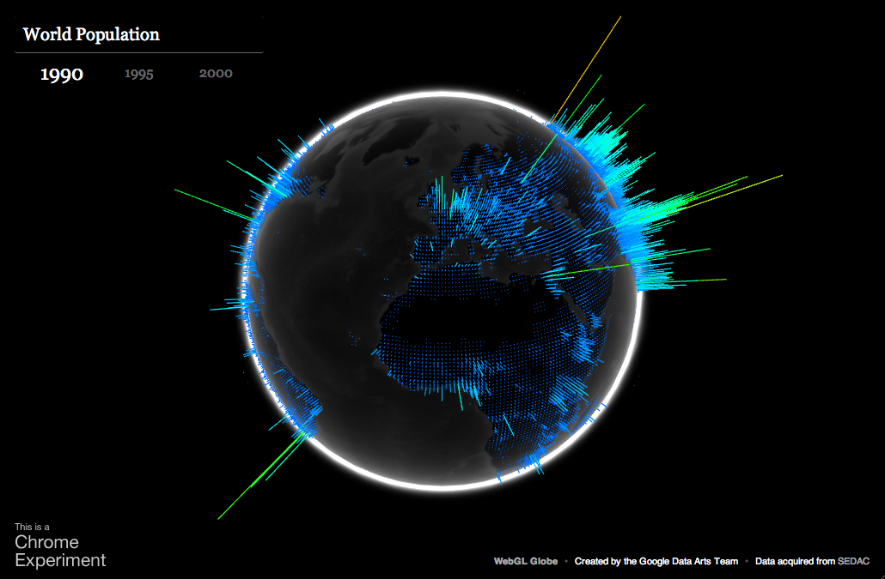
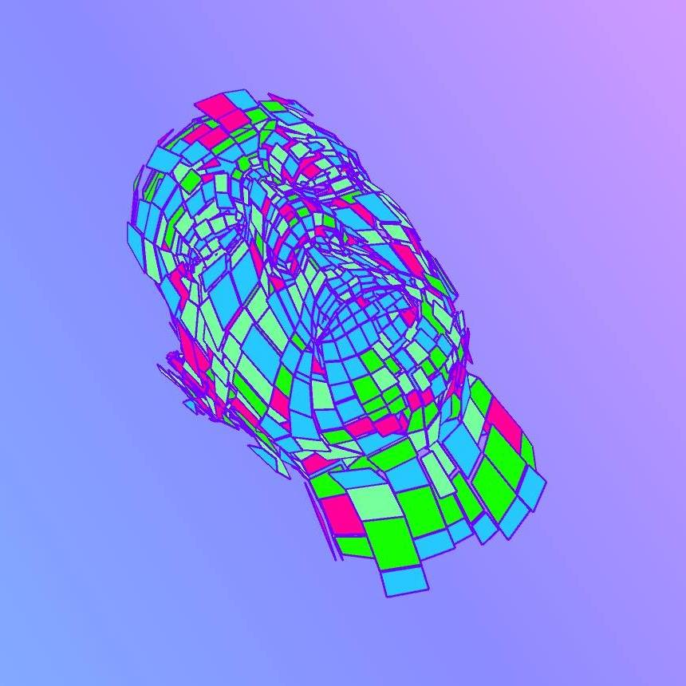
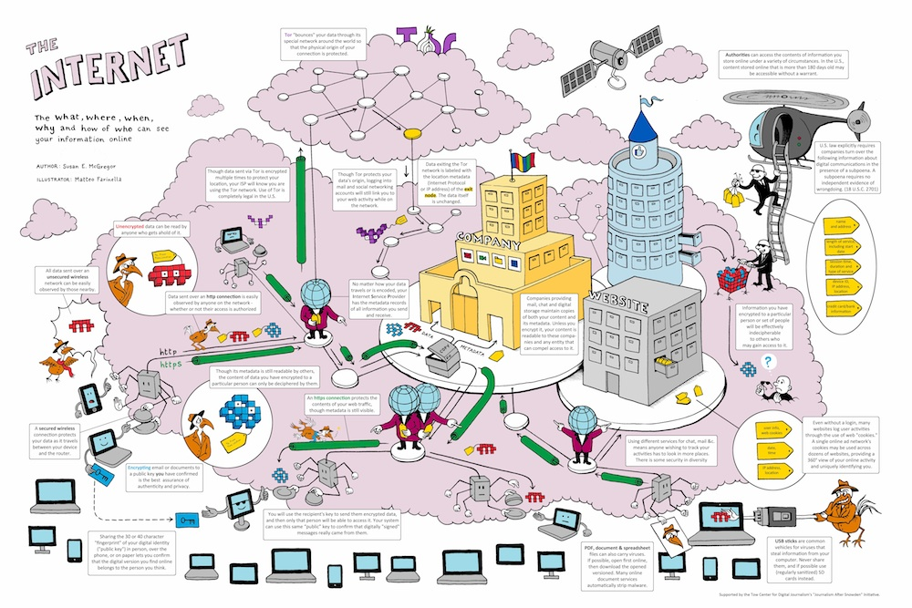
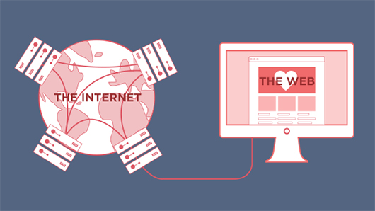
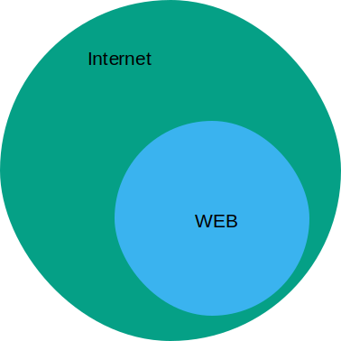
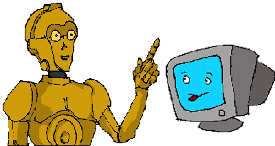

1. Introducción
Diego Montesinos
1.1. Conceptos básicos
1.1.1 Internet vs. Web
Internet ≠ web
Aunque es común usar los conceptos como sinónimos, el Internet y
la web son conceptos diferentes.
El Internet, es la red de redes de computadoras. Es enorme,
y comprende cada comunicación hecha por un grupo de computadoras.
La web es solo una parte (una muy grande) de estas
comunicaciones.
Internet ≠ web
Puedes pensar que la web es un "subconjunto" del Internet.
Pero, ¿cómo sabemos que es web y que no es?

Protocolos de Red
Supón que en la noche tienes una cena con la Reina de Inglaterra. "Espera a que la reina te extienda la mano para tomarla", nos dicen, "Es parte del protocolo".
Protocolos de Red
Un protocolo de red es una lista de reglas que indican como dos o
mas computadoras deben transmitirse informacion.
Las reglas permiten a una computadora entender los mensajes enviados
por otra y actual en consecuencia de esos mensajes.

Internet ≠ web
La principal diferencia es:
- On the Internet the data travels through network protocols: transfer files (FTP), send mails (SMTP), share files BitTorrent.
- The web is the Internet connections in which, the data travels through the HTTP protocol.
HTTP Protocol
HTTP stands for HyperText Transfer Protocol. It is the FOUNDATION
OF THE MODERN WEB.
- HTTP it is based on a host-client architecture.
- All communication between a host and a client occurs, via a request/response pair.
- Uses TCP/IP protocols and the default port is 80.
- The current version of the protocol is HTTP/1.1.
- Has a security version: HTTPS